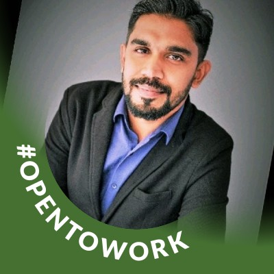
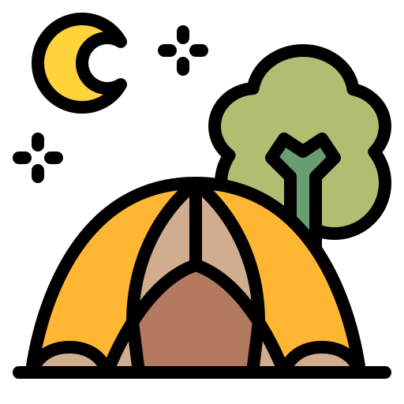

Jidhin Raju
Lead Software Engineer

Lead Software Engineer
Building scalable distributed systems, leading teams, and delivering impact.
Principal-level Backend Engineer with over 12 years of experience architecting and delivering highly scalable, secure distributed systems for the global financial services industry.
Expert in Azure, .NET, and C# ecosystems with a proven record of leading technical design from concept to launch for enterprise applications serving thousands of users.
A dedicated technical mentor focused on elevating team performance and fostering a culture of engineering excellence. I believe in hands-on leadership, maintaining 80%+ coding involvement while guiding teams to deliver exceptional results.
Beyond architecture diagrams and code reviews, I'm passionate about continuous learning, exploring the latest tech trends, and finding creative solutions to structural problems. Outside of tech, I value maintaining a balanced lifestyle that fuels creative and clear thinking.

A highly scalable e-commerce backend built with .NET Core and Azure. Solved critical performance bottlenecks during high-traffic flash sales by migrating to a distributed architecture.
My Role: Lead Architect & Backend Developer

Engineered a low-latency data visualization system for Treasury operations. Optimized computational efficiency by 30% for processing real-time market feeds.
My Role: Senior Software Engineer

Led the development of a cutting-edge identity verification API leveraging advanced image processing to deliver a 20% increase in biometric validation accuracy.
My Role: Tech Lead

I'm always interested in hearing about new opportunities, challenging projects, or just connecting with fellow engineers.
Whether you're looking for a technical leader to architect scalable systems, mentor your team, or drive engineering excellence, let's talk.